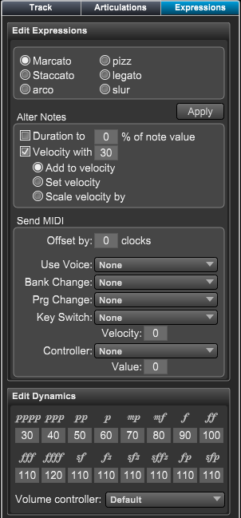

Track Inspector Panel - Expressions Section
Track Inspector Panel - Expressions Section
If the Expressions panel is not showing click on the Inspector button at top right of Control Bar or type "Shift-I" to open the panel. Then choose Expressions.
The Expressions panel contains dynamic and expression playback settings for the current track.

Use this panel to set default settings for several common expressions that are entered into your score.
Expression Option - Choose the expression to edit
- Marcato - Marcato expression text.
- Staccato - Staccato expression text.
- arco - Arco expression text.
- pizz - Pizzicato expression text.
- legato - Legato expression text.
- slur - Slur symbol
Apply Button - Use this button to change existing expressions in your score of this type with these settings.
This will replace any selected expressions of this type in the current track. If nothing is selected it will change all expression of this type in the current track.
Alter Notes
Use this to change the MIDI duration and velocity of all notes after this expression.
Send MIDI
Use these options to send controller data, program changes, and key switches, to the output device, or even change to another voice within the track.
- At note start - Choose this to send the settings at the start of the note's playback.
- At note end - Choose this to send the settings at the end of note's playback.
- Offset by - Use this to offset the expression's starting playback time
- Use Voice - Choose this option if you want the expression to force a track to use the playback setting for a different voice. Ex. If voice 1 is a normal violin sound on channel 1 and voice 2 is a pizzicato sound on channel 2, an expression entered on voice 1 could force all notes in voice 1 to start play using voice 2 settings. In other words, send all voice 1 notes out on channel 2 instead of channel 1. Another expression later on, could force all notes to be played using the original settings for voice 1.
- Bank Change - Choose this option if you want the expression to send MIDI bank change on this track.
- Prg Change - Choose this option if you want the expression to send MIDI data that changes the sound in a track.
- Key Switch - You can send key switch data to MIDI or VST devices to switch instruments or modes.
Choose this option if you want the expression to send a key switch. Key switches are
used by sample libraries to switch styles within a sample. The popup menu only shows the valid key switches for this track and voice.
If you wish to see all possible key switches, check the appropriate setting in the Preferences dialog.
- Velocity - Set the velocity to be used by this key switch.
- Controller - You can send controller data to changes MIDI settings or access effects in MIDI or VST devices or VST instruments.
- Value - Set the value to be sent with this controller.
Dynamics
Set the values to be entered for each dynamic type. You can also set the default controller to use for volume.
The possibilities are limitless with theses commands